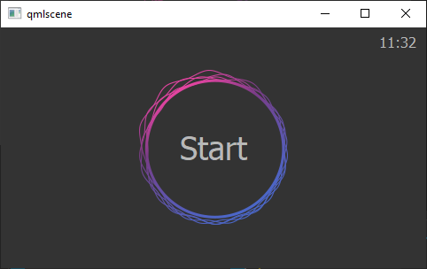
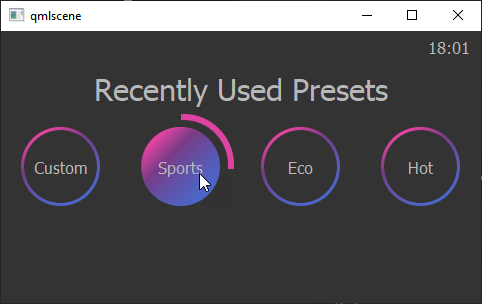
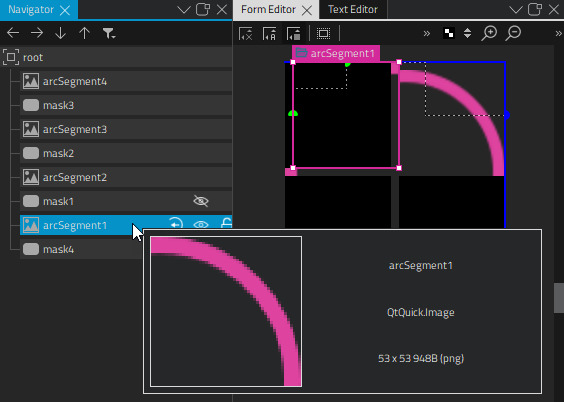
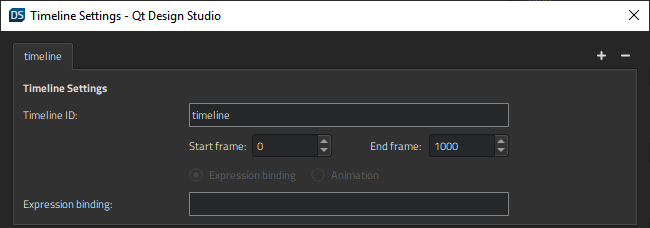
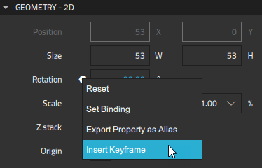
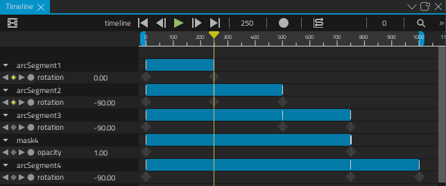
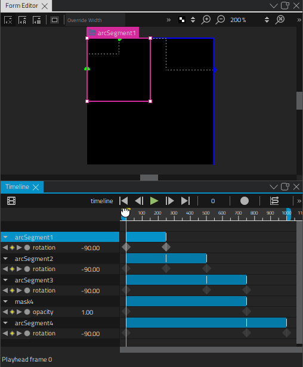
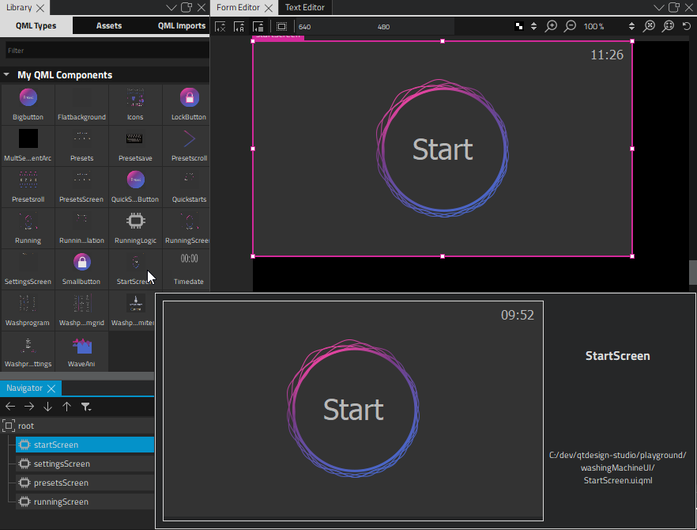
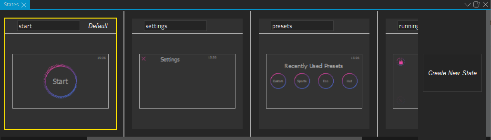
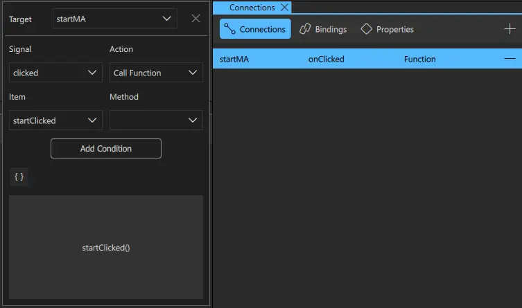

Washing Machine UI
Illustrates how to create a UI that can be run both on the desktop and on MCUs.

Washing Machine UI is a control panel application for washing machines. The application contains the following screens:
- Start displays a start button
- Presets displays recently used wash programs
- Quick Start enables users to either specify settings or start the selected wash program
- Wash Program displays wash program settings
- Running displays the progress of the wash program
Users select buttons to navigate between the screens. We use connections to determine which screen to open when users select a particular button and states to show the screens. We use the timeline to create progress indicators for buttons and the Running screen.
In addition, all screens contain a small clock component that displays the current time. We implement a TimeDate JavaScript object to support this feature on Qt for MCUs, which does not support the Date component at the time of writing.
Creating an Application for MCUs
We use the Qt for MCUs Application project template to create an application for MCUs, which support only a subset of the preset components.
To create an MCU project:
- Select File > New Project.
- In the Presets tab, select the Qt for MCUs preset.
- In the Details tab:
- Select the path for the project files. You can move the project folders later.
- Set the screen size to match the device screen, which also enables previewing on the desktop. You can change the screen size later in Properties.
- Select Create to create the project.
This way, only the components and properties supported on MCUs are visible in Components and Properties, and we won't accidentally add unsupported components to our UI or specify unsupported properties for supported components. For more information, see Creating Projects.
In addition, the wizard template creates a generic CMakeLists.txt file that we can use to configure and build our example application for running it on MCUs.
Note: This example has been tested to run using Qt for MCUs versions since 1.6. You cannot run it on older versions. Also, at the time of writing, Qt for MCUs only supports Qt 5.
Creating Screens
For this example, we used an external tool to design the UI and then exported and imported our design into Qt Design Studio as assets and components using Qt Bridge, as instructed in Exporting from Design Tools. While exporting, we only picked components supported by Qt for MCUs to use for our components. For the button components, we mostly use the Image, Text, and Mouse Area components. For the screen background, we use the Rectangle component.
The text might look different on the desktop and MCUs because on the desktop we use dynamic font loading, whereas on MCUs fonts are compiled into application sources. Therefore, the text will always be Maven Pro on MCUs, whereas on the desktop you'd need to have Maven Pro installed for it to be used. Usually, you will see the system default font instead.
We also created a more complicated component called MultSegmentArc that we use to indicate that a button is pressed.
Alternatively, you could create the screens from scratch in Qt Design Studio by selecting File > New File > Qt Quick Files. While designing the screens, you can move reusable components into separate files. For more information, see Using Components.
Creating a Progress Indicator
We create a reusable MultSegmentArc component, and use it in our Bigbutton and Smallbutton components to indicate the button press progress. The component displays an animated arc around a button when it is pressed. On the desktop, users only need to click once to run the animation to the end, whereas on MCUs, they need to keep the button pressed until the animation finishes.

Our component is composed of four blocks, into which the arc segments will rotate to indicate progress. To build it, we use Image components that have pictures of four segments of an arc as sources and Rectangle components that mask the segments of the arc that should be hidden until they have rotated into place. For the Smallbutton component, we override the images with pictures of smaller arc segments that will fit nicely around the small button.

We animate the rotation properties of the arc segments to rotate each of them into the next block, one after another.
We use this component instead of the Arc component, which is not supported on MCUs.
We can now add a timeline animation to make the arc move around the button when the button is pressed. In the Timeline view, we select the  button to add a 1000-frame timeline to the root of the component. We'll use the default values for all other fields.
button to add a 1000-frame timeline to the root of the component. We'll use the default values for all other fields.

First, we select the initial arc segment, arcSegment1, in Navigator to display its properties in Properties. In Geometry - 2D > Rotation, we select  (Actions), and then select Insert Keyframe to insert a keyframe that we can animate in the Timeline view.
(Actions), and then select Insert Keyframe to insert a keyframe that we can animate in the Timeline view.

To start recording a rotation animation on the timeline, we check that the playhead is at frame 0 and then select the  (Auto Key (K)) button (or press k).
(Auto Key (K)) button (or press k).
First, we set the rotation at frame 0 to -90 in Properties > Geometry - 2D > Rotation. Next, we move the playhead to frame 250 and set the rotation to 0.
When we deselect the record button to stop recording the timeline, the new timeline appears in the view.

We now repeat the above steps to add keyframes for the other arc segments and to animate their rotation property to move from -90 at frame 0 to 0 at frame 500 (arcSegment2), 750 (arcSegment3), and 1000 (arcSegment4).
When we move the playhead in Timeline, we can see the rotation animation in the 2D view.

Creating States
In our UI, we use connections and states to move between screens. First, we specify the application workflow in ApplicationFlow.qml. When the file is open in the 2D view, we drag-and-drop the components that define the screens in the application from Components to Navigator or the 2D view: StartScreen, SettingsScreen, PresetsScreen, and RunningScreen.

Because we will use states to display one screen at a time, depending on the choices users make, we can place all the screens on top of each other in the top-left corner of the root component.
Then, we open the States view to create the start, settings, presets, and running states for displaying a particular screen by selecting Create New State.

In Qt for MCUs, states work differently from Qt Quick, and therefore we sometimes use when conditions to determine the state to apply, and sometimes switch states using signals and JavaScript expressions.
Connecting Buttons to State Changes
In each file that defines a screen, we connect signals to the button components to change to a particular state when users select buttons.
Some signals are predefined for the Mouse Area component, some we have to add ourselves. For example, let's look at the start button that we use in StartScreen.ui.qml. First, we use the Code view to create the startClicked signal:
Item { id: start width: 480 height: 272 signal startClicked
Then, we select the mouse area for the start button, startMA, in Navigator. On the Connections tab in the Connections view, we select the (Add) button. We set Signal to clicked, Action to Call Function and Item to startClicked. Next, we select the  button to close the connection setup options.
button to close the connection setup options.

Then, in ApplicationView.qml, we specify that the startClicked() signal changes the application state to presets:
Item { id: root state: "start" width: 480 height: 272 StartScreen { id: startScreen visible: true onStartClicked: { root.state = "presets" }
We have to do it this way because we are developing for MCUs. We have to use either when conditions or set the state directly through code, which overrides when conditions. Otherwise, we could just select the action to change to the state that we want in the Action field.
We create similar connections between button components and signals in the other screens to apply other actions that move users to other screens.
For more information, see Connecting Components to Signals.
Showing the Current Time
The Date component is not supported on Qt for MCUs, and the implementation of the JavaScript Date() object returns elapsed time since when the application was started instead of the current date and time, as specified in ECMAScript specification.
To get around this limitation on the desktop, we create our own component in the Timedate.qml file with some properties that we will need later to get the current time in hours and minutes:
Item { id: timedate width: 47 height: 29 readonly property alias currentHourInt: timeContainer.hrsInt readonly property alias currentMinuteInt: timeContainer.minInt
On MCUs, we will unfortunately still see the elapsed time since when the application was started. However, this is useful on the Running screen for indicating the progress of the selected wash program.
We use a Text component to create a label with formatted text:
Text {
id: timelabel
x: 2
y: -1
width: 43
height: 16
color: "#B8B8B8"
font.pixelSize: 16
horizontalAlignment: Text.AlignHCenter
font.family: "Maven Pro"
text: timeContainer.hrsStr + ":" + timeContainer.minStr
}
We use an Item as a logic module to get and format current time information:
Item {
id: timeContainer
property string hrsStr: "00"
property string minStr: "00"
property int hrsInt: 0
property int minInt: 0
Timer {
id: timer
interval: 1000
running: true
repeat: true
onTriggered: {
updateTime()
}
We use the updateTime() function to display the current time in hours and minutes:
function updateTime() {
var currentDate = new Date()
timeContainer.hrsInt = currentDate.getHours()
if (timeContainer.hrsInt < 10) timeContainer.hrsStr = "0" + timeContainer.hrsInt
else timeContainer.hrsStr = timeContainer.hrsInt
timeContainer.minInt = currentDate.getMinutes()
if (timeContainer.minInt < 10) timeContainer.minStr = "0" + timeContainer.minInt
else timeContainer.minStr = timeContainer.minInt
}
To use two digits for hours and minutes, we use the hrsStr, minStr, hrsInt, and minInt properties to add extra zeros for values below 10. This way, the clock will display the time as 08:00 instead as 8:0, for example.
Files: